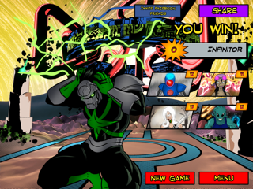
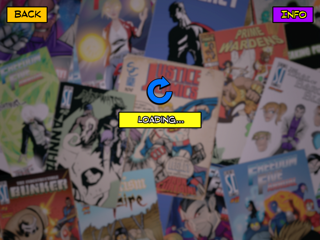
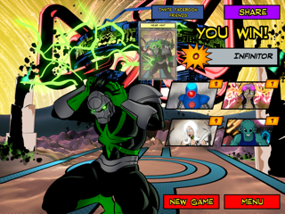

Near Mint, but because of some sort of glitch. I played the game once through, and although I won without rewinding, it didn't register a card (screenshot 1). When I tried to go to the main menu, I got a strange "loading" screen (screenshot 2), but finally got back, at which point, it said "New Weekly One-Shot," as if I hadn't played before. I played it through again, without rewinding, but only got a Near Mint (screenshot 3).
The second game was significantly closer than the first. Bad luck with the draws, and Omni-X never got any of his platings, which meant (1) that his components kept getting blown up, and (2) I couldn't work the neat combo with Unity/Hasty Augmentation/Defensive Blast, and do 9-12 pts of damage to every target on the board. Plus, Tempest never got his Localized Hurricane, so his cards were limited, and it took forever for Nightmist to get her Amulet, so she couldn't redirect damage.
Unity was the star in this one. I had Omni-X keep feeding her cards, and she eventually got out about six bots, including Swifty and Stealthy, and a couple of Raptors, which ended up finishing off Infinitor. I liked this one-shot; it showed me a couple of combos I'd never used before:
(1) I knew that Omni-X was good for feeding Unity out-of-turn bot draws, but a number of her other cards are really good for playing out of turn as well, particularly when she is after Omni-X in the turn order. For example, a Supply Crate out of order can both give Unity an extra card draw (from Supply Crate), as well as put an Equipment out for her to destroy to play a bot. An out-of-turn Hasty Augmentation is a free out-of-turn power for any hero. If her bot options are low, an out of turn Brainwave (?? The card that gives her two draws and 1 electrical damage to three targets) can give her some more options before the start of her turn.
(2) Unity also works well with Omni, because much of his stuff is equipment, which can be sacrificed to feed her bots. For example, the Gaussian Whatchamacallit (does 1 pt damage to all non-hero targets) was doing me little good against Infinitor and his -1 DR, so I sacrificed it to bring out a Platform Bot, which could do more damage.
(3) A truly awesome Unity/Omni combo is Hasty Augmentation/Defensive Blast. DB lets Omni-X do (essentially) 1/1/1 or 1/1/1/1 damage to every non-hero target on the board. Hasty Augmentation boosts that damage by +2 *per hit*, which means that Omni can do a staggering 9-12 points to every non-hero target.
(4) Making (3) even more powerful was Tempest. On my first game (the one that somehow got glitched), I played a Hasty Augmentation-boosted Defensive Blast. Tempest then brought Hasty Augmentation back out of the trash (Reclaim from the Deep), and I used the deadly combo again the next turn -- in two turns, Omni did 18 points of damage to every non-hero target. Ouch.


